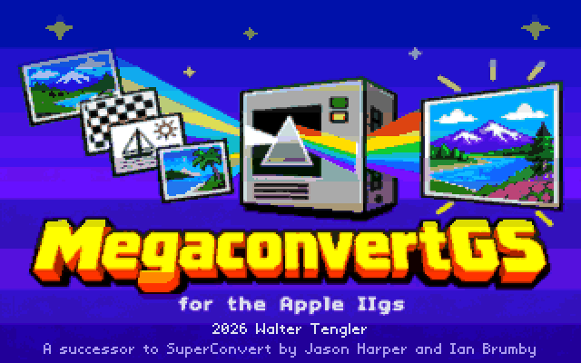
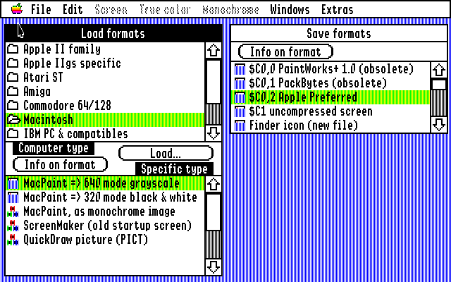
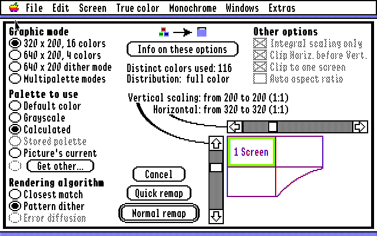
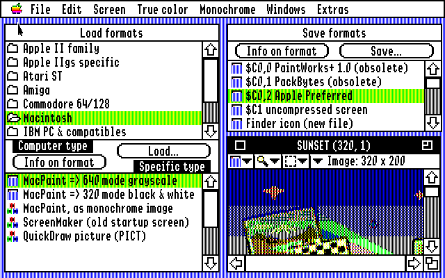

Apple II family
HiRes and Double HiRes, Print Shop graphics, ThunderScan scans, Works of Art pages, TDM text screens

For the Apple IIgs · GS/OS · free and open source
MegaconvertGS opens nearly 70 picture formats from the Apple II and IIgs, the Atari ST, the Amiga, the Commodore 64, the Macintosh, the PC, the Amstrad CPC, the Atari 8-bit, the MSX, the ZX Spectrum and today's computers, and turns them into Super Hi-Res: 320 or 640 mode, or a palette for every line.
It runs on the IIgs itself, written from scratch in 65816 assembly, and it follows SuperConvert, the classic IIgs converter, window for window.
These are real results from MegaconvertGS, made in an emulated IIgs. Pick a picture, then a conversion.
The computer types of the Load formats window. New marks formats SuperConvert didn't have.
HiRes and Double HiRes, Print Shop graphics, ThunderScan scans, Works of Art pages, TDM text screens
Super Hi-Res ($C0, $C1, Apple Preferred), PaintWorks, Paintworks Gold, DreamGrafix, "3200 color", Print Shop IIgs, Finder icons, AST and ComputerEyes
Degas, Degas Elite, Neochrome, Tiny, Spectrum 512
IFF ILBM with HAM, Extra HalfBrite and 24-bit
Doodle, Koala, Print Shop, New Art Studio, New Advanced Art Studio, New FLI Graph, New Amica Paint
MacPaint, ScreenMaker, New QuickDraw PICT
BMP, PC Paintbrush, GEM/Ventura IMG, DeluxePaint LBM, FliAway frames
Sun Rasterfile, SGI, PBM, PGM, PPM
Screens in mode 0, 1 and 2, with or without the AMSDOS header or packed by OCP Art Studio, in the colours and mode of their .PAL file
MicroPainter, Graphics 8 and Graphics 9 screens
Screen 2, 5, 7 and 8, with the file's palette
Screens (.SCR), in the Spectrum's 15 colours
JPEG (also New progressive), PNG, GIF, CompuServe RLE, IPI, QRT, New TIFF, New Targa
Made several times faster without changing a single result. Seconds on a 2.8 MHz IIgs (emulated):
before now



MegaconvertGS.po is an 800K ProDOS disk with the program, its help text, its title picture and its Finder icon. Free and open source.
On a real IIgs, write the image to a 3.5" disk or use a FloppyEmu or BlueSCSI. In MAME (on a Mac, easiest through Ample), boot your System 6 disk and put the image in a 3.5" drive.